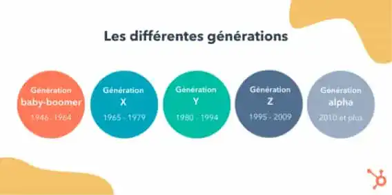

There are different generations of people, who were born between a specific date.
Baby boomers, people born between 1946 and 1964, during the baby boom period that followed World War II, when the birth rate was crucially high.
Generation X, born between 1965 and 1979, who experienced the oil crisis and the great wave of unemployment.
Generation Y, or Millenials, born between 1980 and 1994, this generation experienced the beginning of the internet and all kinds of technology.
Generation Z, born between 1995 and 2009, a good number of us, it was born and raised with the digital, it is an ultra-connected generation.
Then finally the Alpha generation, those born in 2010 or later, a very young generation, who grew up with the big changes of the world and screens everywhere.
For generations before alpha, screens are generally not a problem, having grown up with them we know the advantages and the shortcomings.
This does not prevent the dangerousness of screens and the web, having negative impacts negative impacts on the physical, psychological or even on the social life.
The screens can lead, if we lose control of them, to a sedentary lifestyle and to overweight, a lack of sleep from which many of us suffer, pain due to body posture and visual disorders.
They are also the cause of a decrease in well-being, which can lead to self-esteem (with the example of social networks), an addictive addiction in the same way as cigarettes, alcohol or drugs. or drugs.

Impacts on social life are to be expected too, between isolation, school results, difficulty in socializing and risks for the safety of oneself or others. for the safety of oneself or others.
All generations suffer from the negative effects of screens, but the all generations suffer from the negative effects of screens, but the worst is to be expected for future generations, who will grow up with a internet and screens absolutely everywhere.
They will also grow up with the future web 3.0, a world that we currently have very little information about.
I wrote this article to raise awareness about this cause and to take care for the people around us, and to protect our future generation from all the from all the harms of screens and technology.